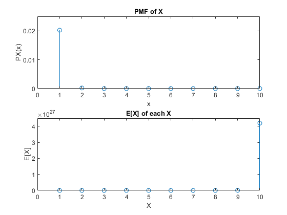

% a) % 20 possible numbers can appear on a card 4 times. This is equal to % 20Choose4. 20Choose4 = 4845 possible combinations. A winning combination % is only one combination. This means the probability of a random ticket % holding the winning combination is 1/4845 = 0.0002064. % b) % Since there is only winners and losers(2 outcomes) and we are trying to % find the number of winning tickets, this random variable is a Binomial % Random Variable. This can be modelled by % PX(x)=(nChoosex)(p^x)(1-p)^(n-x). figure; % c) p = 1/4845; % probability of a winning ticket n = 100; % number of available tickets PMF = zeros(1,10); % Probability Mass Function vector for x=1:10 % Binomial RV formula PMF(x)=nchoosek(n,x)*(p^x)*(1-p)^(n-x); end subplot(2,1,1); stem(PMF); axis([0 10 0 0.025]); xlabel('x'); ylabel('PX(x)'); title('PMF of X'); % d) prize_pool = 10000; % prize pool of $10000 E = zeros(1, 10); % Expected Value vector for i=1:10 E(i) = prize_pool / PMF(i); end subplot(2,1,2); stem(E); axis([0 10 0 4.5*10^27]); xlabel('X'); ylabel('E[X]'); title('E[X] of each X');